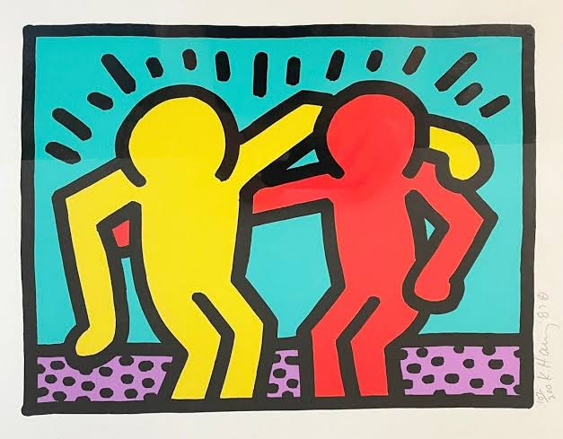

Keith Haring

Short Biography
Keith Haring was an influential American artist born in Pennsylvania and based in New York City. Rising to fame during the 1980s, his work merged street culture, graffiti, and fine art into a bold and accessible visual language. Haring used his energetic, cartoonish figures to address critical social and political themes, including LGBTQ+ rights, apartheid, and the AIDS epidemic. After being diagnosed with AIDS, he established the Keith Haring Foundation to support AIDS-related organizations and children's programs, leaving a lasting legacy of activism before his passing in 1990.
Important Facts
- Subway Drawings: Between 1980 and 1985, he produced hundreds of rapid white chalk drawings on unused black advertisement spaces in New York subway stations.
- The Pop Shop: In 1986, he opened the Pop Shop in SoHo to sell shirts, toys, and posters, aiming to make his art accessible to the general public rather than exclusive to collectors.
- Iconic Symbols: Created a widely recognized set of universal motifs, notably the "Radiant Baby", the barking dog, glowing flying saucers, and interlocking dancing figures.
- The Keith Haring Foundation: Established in 1989, the foundation continues to preserve his artistic legacy and provide grants to non-profit organizations supporting HIV/AIDS care and education.
Career Highlights
- 1982: Held his breakthrough solo exhibition at the Tony Shafrazi Gallery in New York, which catapulted him into international acclaim.
- 1986: Painted the iconic "Crack is Wack" mural along Manhattan's FDR Drive as a public service warning against the cocaine epidemic.
- 1986: Created a massive 300-meter mural on the western side of the Berlin Wall, depicting figures linked hand-to-hand to symbolize unity.
- 1989: Completed Tuttomondo on the exterior wall of the Sant'Antonio church in Pisa, Italy, celebrated as his final major public mural dedicated to world harmony.